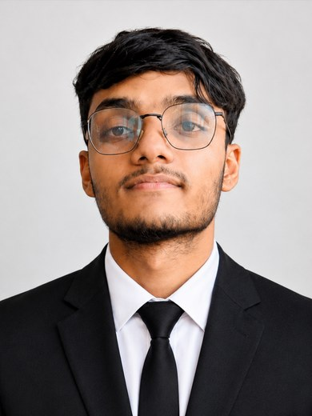

Md. Taifur Hossain.
SOFTWARE ENGINEERING INTERN

Final-year Computer Science undergraduate who ships working software. Built and released four open-source tools across 3D vision, model compression, and developer tooling, each with tests, CI, documentation, and a tagged release, plus a first-author paper accepted at ICCA 2026 (ACM). Also builds full-stack and applied-AI systems, from a Next.js learning platform to a hybrid medical expert system. Comfortable across C, C++, C#, Python, and JavaScript, and used to owning a problem from prototype through to a documented release. Open to software engineering internships across backend, full-stack, systems, and ML.
TECHNICAL SKILLS
LANGUAGESC, C++, C#, Python, JavaScript / TypeScript, SQL, Bash
WEB & FRAMEWORKSNext.js, React, Node.js, Tailwind CSS, Flask, Streamlit, Three.js, Vite, HTML / CSS
AI & DATAPyTorch, scikit-learn, NumPy, Prisma, SQLite, RAG and embeddings, Bayesian inference, heuristic search (A*), model quantization
3D & VISION3D Gaussian Splatting, NeRF, Nerfstudio, gsplat, COLMAP
TOOLS & PRACTICEGit, Docker, GitHub Actions (CI/CD), GHCR, Linux, pytest, ruff, ESLint, Agile / Scrum
PROJECTS
Lumina, AI Learning Management System
CSC 470 · GitHub
AI-assisted learning platform built across Agile sprints, with a retrieval tutor grounded in real course material.
- Full-stack Next.js 16 and React 19 application in TypeScript, roughly 7,500 lines, backed by Prisma and SQLite.
- Retrieval-augmented tutor that answers from uploaded course materials and shows the sources it used.
- Role-based access for Student, Instructor, and Admin, with JWT sessions, bcrypt password hashing, and Zod input validation.
- Adaptive learning paths, gamification (XP, badges, streaks), and instructor analytics dashboards.
- Runs fully offline against a mock AI provider, or against Google Gemini by setting a single environment variable.
Tech Stack: Next.js, React, TypeScript, Tailwind CSS, Prisma, SQLite, Google Gemini, Zod, Recharts.
Training-free compression tool for trained 3D Gaussian Splatting models.
- Compresses trained 3DGS models by roughly 74% with under 3 dB quality loss, with no retraining.
- Four-stage pipeline: adaptive opacity pruning, outlier clipping, spherical-harmonic reduction, and quantization.
- Self-decodable mixed-precision format storing per-group ranges in a sidecar
.meta.npz, so output still opens in standard viewers.
- Shipped as a CLI and a library, with automated tests and linting on every push and a tagged
v0.1.0 release.
Tech Stack: Python, Typer, NumPy, plyfile, pytest, ruff, GitHub Actions.
AI-Based Medical Expert System
CSE 4383 · GitHub
Hybrid expert system combining five AI techniques into a single diagnosis pipeline.
- Combines rule-based reasoning with confidence factors, A* search, Best-First search, Bayesian inference, and a Decision Tree plus MLP neural network.
- Merges all five outputs through a weighted ensemble to produce a ranked diagnosis with confidence scores.
- Encodes 10 IF-THEN rules over 15 binary symptom features across 6 conditions, and benchmarks the pipeline against a real dataset.
- Serves the whole system through a Flask web interface with a symptom checklist and a results dashboard.
Tech Stack: Python, Flask, scikit-learn, NumPy.
One-command Dockerized pipeline turning a folder of photos into a training-ready 3D dataset.
- Packaged a fragile multi-tool chain (COLMAP to Nerfstudio) into a single reproducible Docker command, published to GHCR automatically by CI.
- Automatic matcher selection by capture type, plus GPU and CPU auto-detection with a fallback, so the same command runs on a cloud GPU or a laptop.
- Validates input before a long run, flagging double extensions and too-few images, then prints a registration-rate summary. Verified on a real 40-photo capture at 40 of 40 registered.
Tech Stack: Python, Typer, Docker, COLMAP, Nerfstudio, GitHub Actions, GHCR.
Retrieval-augmented question answering over a PDF library, with citations you can verify.
- Every answer cites the exact paper and page it came from, and the app declines to answer when the sources do not cover the question.
- Parses PDFs per page so each retrieved chunk carries a (paper, page) tag, enabling cross-paper comparison questions.
- Swappable LLM backend (Groq or Gemini) behind a small interface, with retrieval and citation logic unit-tested using fakes, so tests run with no API key.
Tech Stack: Python, Streamlit, sentence-transformers, PyMuPDF, NumPy.
Browser-based, real-time demo of the compression pipeline.
- Load a 3D scene and watch file size and visual quality trade off live on the GPU while dragging sliders.
- Ported the Python compression maths to TypeScript so the browser reproduces the same results, running entirely client-side with no backend.
Tech Stack: TypeScript, Three.js, Vite, GitHub Pages.
PUBLICATION
Beyond Naive INT8: Adaptive Post-Training Compression for 3D Gaussian Splatting
· ACCEPTED
M. T. Hossain, S. S. Sourav, M. A. Hossain. Proc. ICCA 2026 (ACM), Dhaka.
- First author. Built the full experimental pipeline and evaluated it across three scenes on a single 16 GB GPU.
- Achieved a 74% size reduction without retraining, and diagnosed a quantization failure mode that a sub-group range scheme recovers to within 0.1 to 0.7 dB.
EDUCATION
International University of Business Agriculture & Technology (IUBAT)
Dhaka, BD
B.Sc. in Computer Science & Engineering (BCSE)
Expected 2027
CGPA 3.4 / 4.00
Higher Secondary Certificate (HSC)
Dhaka, BD · 2019 - 2021
GPA 5.00 / 5.00
Secondary School Certificate (SSC)
Dhaka, BD · 2018
GPA 5.00 / 5.00
LANGUAGES
ENGLISHProficient
BANGLANative